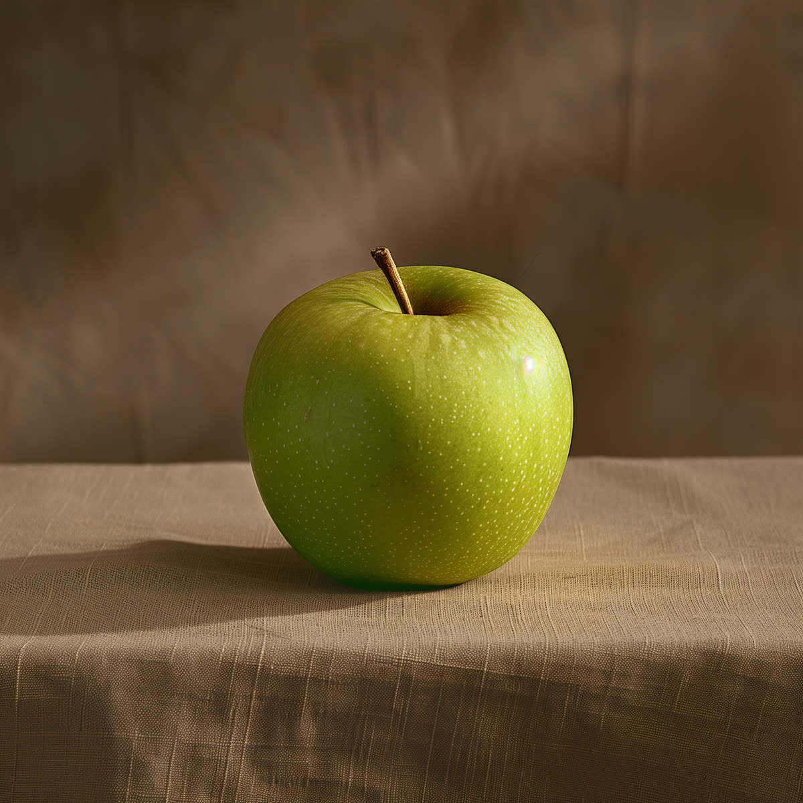

🎭 畫面再真，也要核對
L07 AI 做的圖與 Deepfake 深偽 · 教學活動流程（40 分鐘）
🔗 已連線：老師公布答案時，這台會自動同步
① 猜猜看：哪些是真的照片？
下面 4 張都是食物照片：有的是相機拍的真照片，有的是 AI 做出來的圖。只用眼睛判斷，先不要查、也不要問旁邊的同學。

第 1 張
第 2 張
第 3 張
第 4 張
你主要靠什麼判斷？（可以選好幾個）
點圖可放大。
🔒 答案等老師公布
🎉 公布：第 1、4 張是 AI，第 2、3 張是真照片
第 1 張・AI 生成
Midjourney 畫的。幾乎沒有破綻：光滑、乾淨，連桌布的皺褶都剛剛好。
第 2 張・真照片
相機拍的真甜甜圈（白底攝影）。糖珠亂亂的、邊緣不規則，真的反而可能看起來「很假」。
第 3 張・真照片
餐廳裡拍的凱薩沙拉。燭光、背景模糊的酒杯，看起來很像廣告，但它是真的。
第 4 張・AI 生成
Midjourney 畫的。燈光、擺盤都像精修過的美食廣告照，很難找到明顯的錯。
💡 發現了嗎？
• 「看起來太完美」不一定是 AI，「看起來亂亂的」也不一定是真的。
• 澳洲新南威爾斯大學和國立大學的研究（2026 年報導）：一般人分辨 AI 做的人臉，只比亂猜好一點點，而且每個人都很有自信。
🤔 想一想：如果「看」不太靠得住，我們還能用什麼方法？先學怎麼找破綻，再學怎麼不只靠眼睛。
圖片來源：維基共享資源。第 1 張 Midjourney（公眾領域）；第 2 張 Evan-Amos（公眾領域）；第 3 張 PattayaPatrol（CC BY-SA 4.0）；第 4 張 Dennis Sylvester Hurd／Midjourney（CC0）。
made by 資訊老師黃博胤